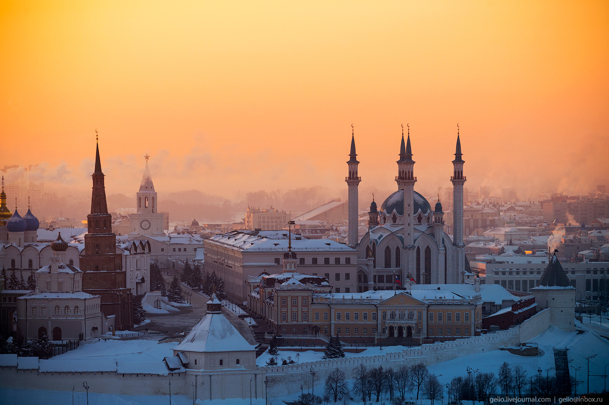

Mесто моей мечты это: Казань

Казань (тат. Казан) — город в России, столица Республики Татарстан, крупный порт на левом берегу реки Волги при впадении в неё реки Казанки. Крупнейший по численности населения город в Приволжском федеральном округе и на реке Волге.
Один из крупнейших экономических, научных, образовательных, религиозных, культурных и спортивных центров России.
Казанский кремль входит в число объектов Всемирного наследия ЮНЕСКО.
Город Трудовой доблести.
Исторически столица (центр) Казанского ханства, Казанского уезда, Казанской губернии и Татарской АССР.
Город имеет зарегистрированный бренд «Третья столица России».
В 2005 году было отпраздновано тысячелетие Казани.
Казань неоднократно принимала международные соревнования высокого уровня по различным видам спорта, в том числе XXVII Всемирную летнюю Универсиаду в 2013 году, а также ряд матчей чемпионата мира по футболу 2018 года.
В 2014 году в рейтинге сайта о путешествиях TripAdvisor в качестве самых быстро развивающихся туристических направлений столица Татарстана заняла 8-е место в мире и 3-е место в Европе.
Наука
Казань исторически являлась одним из главных научных центров России. В городе были совершены такие выдающиеся научные открытия, как создание неевклидовой геометрии (Н. И. Лобачевский), открытие химического элемента рутения (К. К. Клаус), создание теории строения органических соединений (А. М. Бутлеров), открытие электронного парамагнитного резонанса (Е. К. Завойский), открытие фотонного эха (У.Х. Конвиллем, В.Р. Нагибаров, 1962 год), открытие акустического парамагнитного резонанса (С. А. Альтшулер). Наиболее крупными научными центрами Казани являются: Казанский научный центр РАН был учреждён 13 апреля 1945 года.
В его составе работают около 1000 человек, в том числе 3 академика, 6 членов-корреспондентов, 91 доктор и 290 кандидатов наук. В состав КНЦ РАН входят 5 академических институтов, в том числе Институт органической и физической химии им. А. Е. Арбузова — крупнейший физико-химический и химико-биологический исследовательский центр РАН в Поволжье. Научный центр имеет 7 научных школ, 6 учебно-научных и научно-образовательных центров.
Академия наук Республики Татарстан была учреждена 30 сентября 1991 года.
Академия имеет в своём составе семь отделений по направлениям наук и Ульяновское региональное отделение, а также 17 научно-исследовательских институтов и центров. Под научно-методическим руководством АН РТ также работает большое число исследовательских организаций. Академией ежегодно присуждаются 11 именных премий, в том числе две международные: по физике — имени Е. К. Завойского, по химии — им. А. Е. Арбузова, а также премии имени Ш. Марджани (в области гуманитарных наук), имени Г. Х. Камая (химия и химические технологии), имени В. А. Энгельгардта (биология), имени А. Г. Терегулова (медицина и здравоохранение), имени Х. М. Муштари (математика, механика и технические науки), имени К. Г. Боля (ветеринария), имени В. П. Мосолова (сельское хозяйство), имени А. Д. Адо (аллергология, иммунология и общая патология). Также в городе функционирует ряд независимых научно-исследовательских институтов.